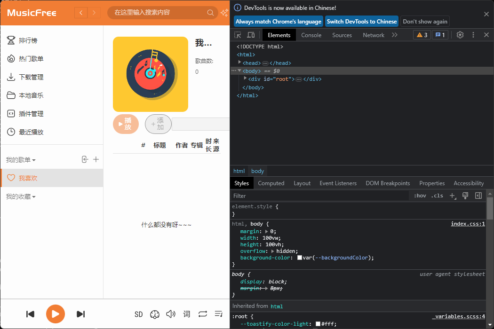

musicfree 依赖项安装
记录自己如何配置环境实现 MusicfreeDesktop在本地的运行。建议先看node-sass一部分，应该可以免去前面对vs和python的要求，VS和python大概是用于本地编译node-sass的。
visual studio
visual studio 需要c++ desktop, win10sdk, 主机环境为win11.
相关的log:
npm error gyp verb find VS msvs_version not set from command line or npm config
npm error gyp verb find VS VCINSTALLDIR not set, not running in VS Command Prompt
npm error gyp verb find VS checking VS2022 (17.10.35027.167) found at:
npm error gyp verb find VS "D:\VisualStudio\ide"
npm error gyp verb find VS - found "Visual Studio C++ core features"
npm error gyp verb find VS - found VC++ toolset: v143
npm error gyp verb find VS - found Windows SDK: 10.0.20348.0
npm error gyp info find VS using VS2022 (17.10.35027.167) found at:
npm error gyp info find VS "D:\VisualStudio\ide"
npm error gyp info find VS run with --verbose for detailed information
参考：https://stackoverflow.com/questions/57879150/how-can-i-solve-error-gypgyp-errerr-find-vsfind-vs-msvs-version-not-set-from
npm config edit打开.npmrc, 添加以下内容：
;2024/7/14 jzl edited
msvs_version=2022
msbuild_path="D:\VisualStudio\ide\MSBuild\Current\Bin\MSBuild.exe"
;end of edit
再次npm install, 输出相关log:
npm error gyp verb find VS msvs_version was set from command line or npm config
npm error gyp verb find VS - looking for Visual Studio version 2022
npm error gyp verb find VS VCINSTALLDIR not set, not running in VS Command Prompt
npm error gyp verb find VS checking VS2022 (17.10.35027.167) found at:
npm error gyp verb find VS "D:\VisualStudio\ide"
npm error gyp verb find VS - found "Visual Studio C++ core features"
npm error gyp verb find VS - found VC++ toolset: v143
npm error gyp verb find VS - found Windows SDK: 10.0.20348.0
npm error gyp info find VS using VS2022 (17.10.35027.167) found at:
npm error gyp info find VS "D:\VisualStudio\ide"
npm error gyp info find VS run with --verbose for detailed information
然后pwsh 输入 setx VSINSTALLDIR "D:\VisualStudio\ide", 这样就没有问题了
pm error gyp verb find VS msvs_version was set from command line or npm config
npm error gyp verb find VS - looking for Visual Studio version 2022
npm error gyp verb find VS running in VS Command Prompt, installation path is:
npm error gyp verb find VS "D:\VisualStudio\ide"
npm error gyp verb find VS - will only use this version
npm error gyp verb find VS checking VS2022 (17.10.35027.167) found at:
npm error gyp verb find VS "D:\VisualStudio\ide"
npm error gyp verb find VS - found "Visual Studio C++ core features"
npm error gyp verb find VS - found VC++ toolset: v143
npm error gyp verb find VS - found Windows SDK: 10.0.20348.0
npm error gyp info find VS using VS2022 (17.10.35027.167) found at:
npm error gyp info find VS "D:\VisualStudio\ide"
npm error gyp info find VS run with --verbose for detailed information
python
npm error gyp info spawn D:\python\python.exe
npm error gyp info spawn args [
npm error gyp info spawn args 'D:\\code\\MusicFreeDesktop\\node_modules\\node-sass\\node_modules\\node-gyp\\gyp\\gyp_main.py',
npm error gyp info spawn args 'binding.gyp',
npm error gyp info spawn args '-f',
npm error gyp info spawn args 'msvs',
npm error gyp info spawn args '-I',
npm error gyp info spawn args 'D:\\code\\MusicFreeDesktop\\node_modules\\node-sass\\build\\config.gypi',
npm error gyp info spawn args '-I',
npm error gyp info spawn args 'D:\\code\\MusicFreeDesktop\\node_modules\\node-sass\\node_modules\\node-gyp\\addon.gypi',
npm error gyp info spawn args '-I',
npm error gyp info spawn args 'C:\\Users\\stone\\AppData\\Local\\node-gyp\\Cache\\22.3.0\\include\\node\\common.gypi',
npm error gyp info spawn args '-Dlibrary=shared_library',
npm error gyp info spawn args '-Dvisibility=default',
npm error gyp info spawn args '-Dnode_root_dir=C:\\Users\\stone\\AppData\\Local\\node-gyp\\Cache\\22.3.0',
npm error gyp info spawn args '-Dnode_gyp_dir=D:\\code\\MusicFreeDesktop\\node_modules\\node-sass\\node_modules\\node-gyp',
npm error gyp info spawn args '-Dnode_lib_file=C:\\\\Users\\\\stone\\\\AppData\\\\Local\\\\node-gyp\\\\Cache\\\\22.3.0\\\\<(target_arch)\\\\node.lib',
npm error gyp info spawn args '-Dmodule_root_dir=D:\\code\\MusicFreeDesktop\\node_modules\\node-sass',
npm error gyp info spawn args '-Dnode_engine=v8',
npm error gyp info spawn args '--depth=.',
npm error gyp info spawn args '--no-parallel',
npm error gyp info spawn args '--generator-output',
npm error gyp info spawn args 'D:\\code\\MusicFreeDesktop\\node_modules\\node-sass\\build',
npm error gyp info spawn args '-Goutput_dir=.'
npm error gyp info spawn args ]
npm error Traceback (most recent call last):
npm error File "D:\code\MusicFreeDesktop\node_modules\node-sass\node_modules\node-gyp\gyp\gyp_main.py", line 42, in <module>
npm error import gyp # noqa: E402
npm error ^^^^^^^^^^
npm error File "D:\code\MusicFreeDesktop\node_modules\node-sass\node_modules\node-gyp\gyp\pylib\gyp\__init__.py", line 9, in <module>
npm error import gyp.input
npm error File "D:\code\MusicFreeDesktop\node_modules\node-sass\node_modules\node-gyp\gyp\pylib\gyp\input.py", line 19, in <module>
npm error from distutils.version import StrictVersion
npm error ModuleNotFoundError: No module named 'distutils'
看样子没有一个叫 distutils的包，新建一个python virtual environment,
python -m venv myenv
# 需要activate myenv
pip install setuptools
可以尝试npm指定python 解释器位置
npm config edit
# 添加python=xxx/scripts/python.exe
这一步不需要双引号，虽然出现了大量错误, 但是没有找不到包的报错了
node-sass
https://juejin.cn/post/6946530710324772878
https://www.npmjs.com/package/node-sass
似乎是node-sass包的问题，没有下载成功就会本地编译，不知道为什么似乎下载和编译都失败了。参考上面两个文章，考虑Musicfree的package.json里node-sass是9.0.0+，应该用node20.
| NodeJS | Supported node-sass version | Node Module |
|---|---|---|
| Node 20 | 9.0+ | 115 |
| Node 19 | 8.0+ | 111 |
| Node 18 | 8.0+ | 108 |
| Node 17 | 7.0+, <8.0 | 102 |
| Node 16 | 6.0+ | 93 |
| Node 15 | 5.0+, <7.0 | 88 |
| Node 14 | 4.14+, <9.0 | 83 |
| Node 13 | 4.13+, <5.0 | 79 |
| Node 12 | 4.12+, <8.0 | 72 |
| Node 11 | 4.10+, <5.0 | 67 |
| Node 10 | 4.9+, <6.0 | 64 |
| Node 8 | 4.5.3+, <5.0 | 57 |
| Node <8 | <5.0 | <57 |
nvm 下载node 20 ：
nvm install 20 64
nvm use 20
然后继续npm install, 至少没有error了
(musicfree) PS D:\code\MusicFreeDesktop> npm install
npm warn deprecated @npmcli/move-file@1.1.2: This functionality has been moved to @npmcli/fs
npm warn deprecated @npmcli/move-file@2.0.1: This functionality has been moved to @npmcli/fs
npm warn deprecated xterm-addon-search@0.8.2: This package is now deprecated. Move to @xterm/addon-search instead.
npm warn deprecated xterm-addon-fit@0.5.0: This package is now deprecated. Move to @xterm/addon-fit instead.
npm warn deprecated asar@3.2.0: Please use @electron/asar moving forward. There is no API change, just a package name change
npm warn deprecated electron-packager@17.1.2: Please use @electron/packager moving forward. There is no API change, just a package name change
npm warn deprecated xterm@4.19.0: This package is now deprecated. Move to @xterm/xterm instead.
> musicfree-desktop@0.0.5 prepare
> husky install
install command is deprecated
added 1484 packages, and audited 1485 packages in 13s
3 packages are looking for funding
run `npm fund` for details
13 vulnerabilities (4 moderate, 8 high, 1 critical)
To address issues that do not require attention, run:
npm audit fix
To address all issues (including breaking changes), run:
npm audit fix --force
Run `npm audit` for details.
vpn
自己用的 clash for windows
npm config edit
# in .npmrc
proxy=http://127.0.0.1:7890
各软件版本
各个软件版本
(musicfree) PS D:\code\MusicFreeDesktop> npm -v
10.7.0
(musicfree) PS D:\code\MusicFreeDesktop> node -v
v20.15.1
(musicfree) PS D:\code\MusicFreeDesktop> node -p process.versions
{
node: '20.15.1',
acorn: '8.11.3',
ada: '2.7.8',
ares: '1.28.1',
base64: '0.5.2',
brotli: '1.1.0',
cjs_module_lexer: '1.2.2',
cldr: '45.0',
icu: '75.1',
llhttp: '8.1.2',
modules: '115',
napi: '9',
nghttp2: '1.61.0',
nghttp3: '0.7.0',
ngtcp2: '1.1.0',
openssl: '3.0.13+quic',
simdutf: '5.2.8',
tz: '2024a',
undici: '6.13.0',
unicode: '15.1',
uv: '1.46.0',
uvwasi: '0.0.21',
v8: '11.3.244.8-node.23',
zlib: '1.3.0.1-motley-7d77fb7'
}
(musicfree) PS D:\code\MusicFreeDesktop> node -p process.platform
win32
(musicfree) PS D:\code\MusicFreeDesktop> node -p process.arch
x64
msbuild_path=D:\VisualStudio\ide\MSBuild\Current\Bin\MSBuild.exe
msvs_version=2022
python=D:\code\python\virtues\musicfree\Scripts\python.exe
效果图
npm start
